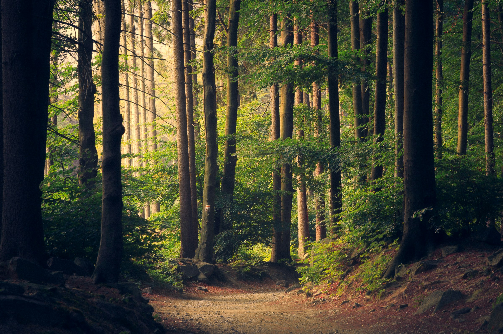

Sonidos de lluvia y bosque
Un paisaje sonoro continuo suaviza los ruidos bruscos del entorno y ayuda a crear un ambiente estable para dormir, leer o concentrarse.
Leer la guía →
Un lugar para descubrir las plantas, cultivar un pequeño rincón verde y encontrar tiempo para una pausa. Historias, guías y experiencias para explorar a tu ritmo.
Una biblioteca en crecimiento, con fuentes para seguir aprendiendo.
Un paisaje sonoro continuo suaviza los ruidos bruscos del entorno y ayuda a crear un ambiente estable para dormir, leer o concentrarse.
Leer la guía →
8 especies emblemáticas: hábitat, firma acústica y estado UICN verificado.
Leer la guía →

Horas de sol, sustrato aireado, humus de lombriz y errores a evitar en casa.
Leer la guía →
Guía de meditación de 5 a 10 minutos para principiantes, sin anuncios.
Leer la guía →No hay guías que coincidan con tu búsqueda o filtro.
Las imágenes de paisaje son recreaciones visuales con IA del proyecto y no identifican las plantas descritas.